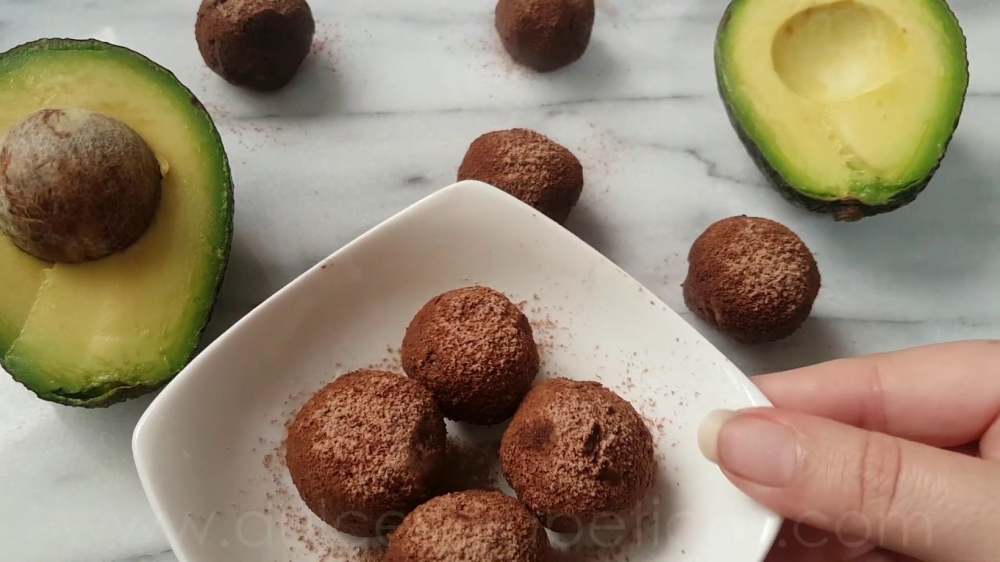
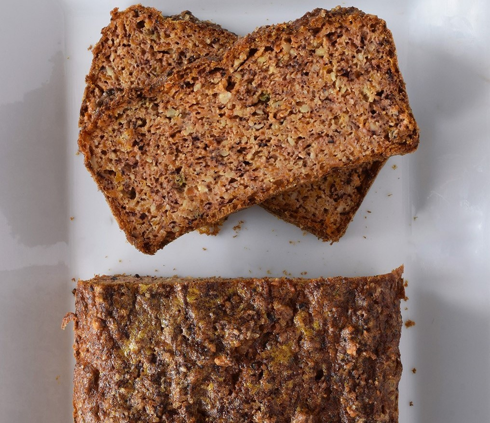
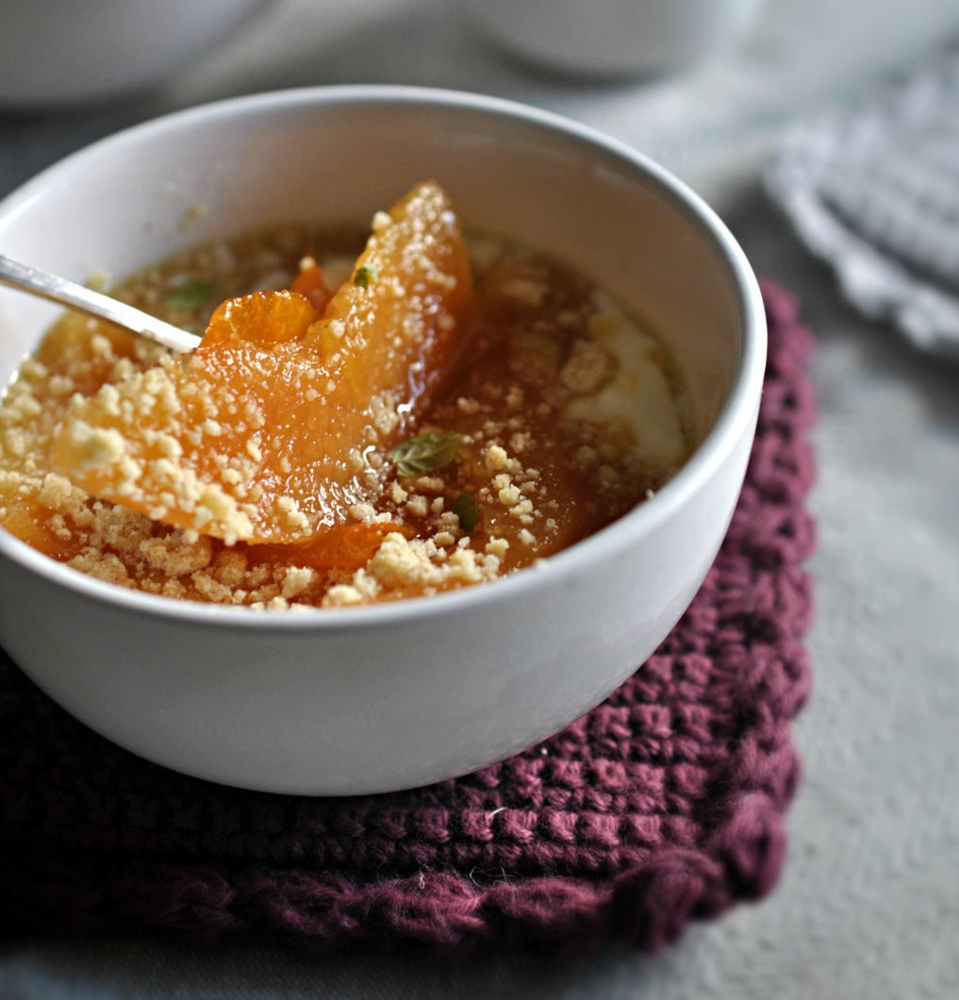

¡Trufas de Palta!
Ingredientes 1 palta maduro, 80 g de chocolate negro para postres, 10 g de mantequilla, cacao en polvo sin azúcar.
Elaboración Funde el chocolate negro y la mantequilla en el microondas en tres series de un minuto. Con ayuda de una cuchara, extrae la pulpa de la palta y machácala con un tenedor hasta obtener una crema. Vierte el chocolate y trabaja la mezcla hasta que sea homogénea. Obtendrás una masa con textura muy ligera imposible de manejar así que lo mejor es meter la masa en el congelador durante unos 45 minutos. Forma las trufas haciendo bolas con cucharas o con las manos. Rebózalas con cacao en polvo. Guarda las trufas en la nevera si nos las vas a comer en el momento, aguantan un par de días en buen estado.
Juan Antonio, hace 2 dias.

¡Bizcocho de zanahoria, avellana y almendras!
Ingredientes 240 g de zanahoria rallada fina, 2 huevos L, 1 limón, 80 g de avellana molida, 70 g de almendra molida, 5 ml de esencia de vainilla, 5 g de canela, 3 g de jengibre, 5 g de bicarbonato sódico, una pizca de sal, 2 claras de huevo.
Elaboración Precalentar el horno a 180ºC y preparar un molde rectangular de unos 20 cm. Mezclar las zanahorias ralladas finas con el zumo de la mitad del limón. Reservar. Batir los huevos con la vainilla usando varillas. Incoporar la avellana, la almendra, las especias, el bicarbonato y la sal. Remover y añadir la zanahoria, mezclando bien. Montar aparte las claras de huevo y añadirlas con movimientos envolventes. Llevar al molde y añadir un poco de canela. Hornear durante unos 40 minutos, hasta que al pinchar el centro con un palillo salga prácticamente limpio. Esperar un poco antes de desmoldar y dejar enfriar sobre una rejilla.
Ana Maria, hace 2 dias.

¡Membrillo en almibar de naranja!
Ingredientes 1 membrillo, 1 naranja, 50 g de azúcar o edulcorante al gusto.
Elaboración Lo primero que tenemos que hacer es cortar el membrillo por la mitad y cada mitad en gajos de, aproximadamente, un centímetro de grosor. Retiramos las semillas y pelamos cada gajo y los colocamos en el fondo de una cazuela, repartidos por toda la base. Tomamos la naranja y con un cuchillo muy afilado retiramos la piel. Solo queremos la parte naranja, nada de blanco (que amarga). Exprimimos su zumo y lo agregamos junto con la piel, el azúcar y medio vaso de agua. Cocemos a fuego suave durante 30 minutos y dejamos enfriar antes de servir, desechando la piel de la naranja. Servimos con yogur o al natural.
Carmen Gregoria, hace 7 dias.